4. КОНСТРУКТИВНЫЕ ТРЕБОВАНИЯ К ТРУБОПРОВОДАМ
4.1. При проектировании трубопроводов надлежит соблюдать требования СНиП 2.05.06-85 и указания настоящих Норм.
Диаметр трубопроводов должен определяться гидравлическим расчетом в соответствии с рекомендуемым приложением 2 настоящих Норм, ОНТП 51-1-85 и ВНТП 3-85. При этом диаметр нефтегазосборных трубопроводов, транспортирующих обводненную продукцию, должен назначаться из условия исключения образования застойных зон водных скоплений. Не допускается проектирование трубопроводов, транспортирующих обводненную нефть со скоростями ниже критических, при которых выделяется слой подстилающей воды.
4.2. Толщина стенки трубопроводов принимается по расчету, в соответствии с разделами 8 и 9 и рекомендуемым приложением 3 настоящих Норм в зависимости от категории участка трубопроводов, параметров транспортируемой среды и конструктивного решения.
4.3. Применяемые для трубопроводов трубы, арматура, соединительные детали и сварочные материалы должны отвечать требованиям, изложенным в разделе 8.
4.4. Трубопроводы следует проектировать сварными в стык с установкой на них соединительных деталей (отводов, тройников, переходников и др.) и стальной запорной арматуры (краны, задвижки, вентили и т.д.) равнопроходного сечения, рассчитанной на расчетное давление в трубопроводе.
Все монтажные сварные швы на участках трубопроводов, транспортирующих газ и конденсат, содержащий H2S, категории В должны подвергаться при соответствующем обосновании снятию сварочных напряжений путем термической обработки швов. Режим термической обработки должен оговариваться проектом или ТУ на сварку.
Необходимость термической обработки сварных швов морских трубопроводов на участках категории "В" с целью снятия сварочных напряжений определяется проектом.
4.5. Продольный профиль подземного трубопровода в необходимых случаях определяется методом оптимального профилирования с использованием ЭВМ. Оптимальным является профиль, удовлетворяющий требованиям по прочности и устойчивости подземного трубопровода. При этом в качестве критерия оптимальности следует принимать параметр учитывающий затраты на устройство траншей, установку отводов искусственного гнутья, укладку трубопровода в траншее, а также требования надежности при эксплуатации и охраны окружающей среды.
4.6. Допустимые радиусы изгиба трубопроводов в горизонтальной и вертикальной плоскостях должны определяться расчетом из условия прочности, местной устойчивости стенок труб и устойчивости положения трубопровода под воздействием внутреннего давления, собственного веса и продольных сжимающих усилий, возникающих в результате изменения температуры металла труб в процессе эксплуатации. Отводы для участков трубопроводов, где предусматривается проход очистных устройств, должен иметь радиус изгиба не менее 5Д. У сварных отводов угол поворота сектора не должен превышать 6°.
4.7. Длина патрубков (прямых вставок), ввариваемых в трубопровод, должна быть равна диаметру трубы, но не менее 250 мм. Для трубопроводов диаметром 300 мм и менее и рабочем давлении до 2,5 МПа длину прямых вставок допускается принимать не менее 100 мм.
4.8. На трубопроводах условным диаметром 200 мм и более, требующих периодической очистки с помощью поршней или шаров должны предусматриваться узлы запуска и приема очистных и разделительных устройств, конструкция и расположение которых определяются проектом.
4.9. Узлы запуска и приема очистных устройств трубопроводов природного газа должны быть оборудованы приборами, регистрирующими прохождение очистных устройств.
Необходимость оснащения узлами для запуска и приема очистных устройств на выкидных трубопроводах от нефтяных скважин, нефтегазосборных трубопроводах, нефтепроводах и трубопроводах нефтяного газа определяется проектом.
4.10. Все элементы трубопроводов, оснащенных узлами для запуска и приема очистных устройств должны быть равнопроходными.
Примечание: на трубопроводах, не требующих периодической очистки с помощью поршней или шаров, допускается установка линейной арматуры, внутренний диаметр которой может быть меньше диаметра основного трубопровода, но не более чем на 20 %.
4.11. В местах подключения трубопроводов к существующим или проектируемым трубопроводам, около мест запуска и приема очистных устройств, в местах установи перемычек, на подходах шлейфов к скважинам и УППГ, УКПГ, СПХГ, ДНС, ЦПС, на переходах через естественные и искусственные преграды и в других случаях, где возможны значительные перемещения трубопроводов, следует определять величину продольных перемещений примыкающих участков трубопроводов от воздействия внутреннего давления и изменения температуры металла труб. Величина продольных перемещений как воздействие должна учитываться при расчете указанных выше конструктивных элементов, присоединяемых к трубопроводу.
С целью уменьшения продольных перемещений трубопроводов и усилий от трубопроводов на примыкающие к ним узлы и конструктивные элементы следует предусматривать специальные мероприятия, в том числе остановку открытых или закрытых компенсаторов, неподвижных опор, установку компенсаторов-упоров и т.д.
4.12. При транспортировании по трубопроводу влажных или конденсирующихся продуктов должны предусматриваться меры, предупреждающие образование ледяных и гидратных пробок (ввод метанола ингибитора, укладка трубопровода ниже глубины промерзания, путевой подогрев трубопровода и другие). Выбор метода определяется на основании технико-экономических расчетов.
4.13. Очистка внутренней поверхности трубопроводов от грязе-парафиновых отложений должна предусматриваться с помощью очистных устройств, пропарка острым паром.
4.14. Давление насыщенных паров продукта при установлении рабочего (нормативного) давления трубопровода должно приниматься, исходя из максимально возможной температуры продукта в условиях транспортирования.
При транспортировании нестабильных газонасыщенных жидкостей рабочее давление во всех точках трубопровода должно быть выше давления насыщения транспортируемого продукта не менее чем на 0,5 МПа. За рабочее (нормативное) давление принимается наибольшее давление, которое может быть в трубопроводе, определяемое при проектировании на основании характеристик источника давления и условий эксплуатации.
4.15. Расчетное давление трубопроводов, подключенных к источнику давления (скважина, сепаратор, колонна и т.д.), оснащенному предохранительным устройством, принимается равным рабочему (нормативному) давлению трубопровода, помноженному на соответствующий коэффициент перегрузки по СНиП 2.05.06-85.
При этом расчетное давление трубопровода не должно быть ниже максимально возможного давления срабатывания предохранительных устройств.
При отсутствии устройства автоматически ограничивающего давление источника за расчетное - принимается максимально возможное давление источника.
С целью сокращения расхода металла при проектировании трубопроводов, примыкающих к скважинам, как правило, следует предусматривать мероприятия, обеспечивающие ограничение внутреннего давления.
4.16. Расчетное давление участков трубопроводов, расположенных ниже геодезической отметки источника давления, должно приниматься с учетом гидростатического давления столба перекачиваемой жидкости или газа.
Размещение запорной и других видов арматуры
4.17. На трубопроводах надлежит предусматривать установку запорной арматуры на расстоянии, определяемом расчетом, но не более 30 км для трубопроводов, транспортирующих нефть и газ, не содержащие сероводород, и не более 5 км для трубопроводов, транспортируют сероводородосодержащие газы и конденсат. На трубопроводах ШФЛУ, конденсата и метанола арматура должна устанавливаться на расстоянии не более 10 км. Кроме того, установку запорной арматуры необходимо предусматривать:
- в начале каждого ответвления от трубопровода протяженностью более 500 м;
На входе и выходе трубопроводов из УКПГ, УППГ, КС, ДКС, ГС, ПХТ, ГПЗ, ДНС, ЦПС, ПС на расстоянии не менее:
для трубопроводов диаметром 1400 мм - 1000 м:
- диаметром менее 1400 мм до 1000 мм включительно - 750 м:
- диаметром менее 1000 мм до 700 мм включительно - 500 м;
- диаметром менее 700 мм до 300 мм включительно - 300 + 500 м;
- диаметром менее 300 мм - 100 + 300 м от территории площадок;
- на обоих берегах водных преград при их пересечении трубопроводами в две и более ниток;
- на нефтепроводах и нефтепродуктопроводах при пересечении водных преград в одну нитку следует предусматривать установку запорной арматуры с учетом рельефа земной поверхности, примыкающей к переходу, и предотвращения поступления транспортируемого продукта в водоем;
- на одном или обоих концов участков нефтепроводов и нефтепродуктопроводов, проходящих на отметках выше городов и других населенных пунктов и промышленных предприятий на расстоянии, устанавливаемом проектом в зависимости от рельефа местности.
На однониточных подводных переходах газопроводов через водные преграды, а также на морских подводных трубопроводах необходимость установки запорной арматуры определяется проектом.
Газопроводы-коллекторы следует секционировать на участки длиной до 10 км.
На подключении шлейфов (выкидных трубопроводов) и ингибиторе проводов к (от) УПГ, УППГ, ПХГ, ЦПС отключающая арматура, как правило, за пределами площадки не устанавливается.
На трубопроводах систем заводнения и захоронения пластовых и сточных вод запорная арматура не устанавливается.
4.18. Узлы установки запорной арматуры должны проектироваться из унифицированных заготовок. Толщина стенок участков трубных заготовок определяется, исходя из условий обеспечения прочности, требуемой для участков II категории, если этот участок не относится к категории В или I.
4.19. Запорная арматура, устанавливаемая на трубопроводах подключения к площадкам УКПГ, УППГ, ГС, КС, ПХГ, ДНС, ГПЗ, ЦПС, ПС, а также нефтепроводах, нефтепродуктопроводах I и II классов, трубопроводах ШФЛУ и нестабильного конденсата при переходе их через водные преграды должна быть оборудована устройствами, обеспечивающими дистанционное управление.
Установка запорной арматуры с дистанционным управлением на морских трубопроводах определяется проектом.
4.20. При параллельной прокладке двух иди более трубопроводов узлы линейной запорной арматуры должны быть смещены на расстояние на менее 50 м друг от друга по длине трубопровода. При соответствующем обосновании допускается уменьшение указанного расстояния, исходя из возможности монтажа, ремонта и безопасности эксплуатации.
4.21. Трубопроводы и арматура обвязки линейной запорной арматуры, находящейся под давлением, байпасы, продувочные линии и перемычки следует предусматривать, как правило, в подземном исполнении с краном бесколодезной установки. Доступ должен предусматриваться к приводу арматуры. Проектные решения должны исключать неравномерную осадку трубопроводов и арматуры.
4.22. На обоих концах участков газопроводов между запорной арматурой следует предусматривать установку продувочных свечей на расстоянии не менее 15 м от запорной арматуры при диаметре трубопровода до 1000 мм и не менее 60 м при диаметре газопровода 1000 мм и более. Диаметр продувочной свечи и ее высоту следует определять на основании расчета рассеивания выбрасываемого из свечи вредного вещества при условии опорожнения участка трубопровода между запорной арматурой за время не более 2 часов, а расстояние от свечи до зданий и сооружений не относящихся к данному трубопроводу, должно приниматься в соответствии с требованиями СНиП 2.05.06-85.
4.23. На обоих концах участков трубопроводов ШФЛУ и конденсата между запорной арматурой для аварийного сброса продукта следует предусматривать вместо продувочных свечей специальные ответвления. Каждое ответвление должно быть оснащено запорным органом и иметь длину не менее 10 м, выступать на 0,5 м над поверхностью земли и заканчиваться фланцевой заглушкой.
В комплекте аварийных средств проектом должны быть предусмотрены два разборных трубопровода длиной не менее 60 м каждый, предназначенные к использованию при опорожнении поврежденных участков трубопровода для отвода из них продукта в сооружаемые в земле амбары, в которых на безопасном расстоянии от трубопровода и других объектов сбрасываемый продукт подлежит утилизации или сжиганию.
4.24. В качестве линейной запорной арматуры на трубопроводах должна использоваться арматура бессальниковой конструкции, предназначенная для бесколодезной установки.
На промысловых трубопроводах нефтяных месторождений допускается применять линейную сальниковую и фланцевую арматуру, но в этом случае она должна размещаться надземно на опорах.
Применение фланцевой арматуры допускается для подключения трубопроводов к оборудованию и устройствам.
5. ПРоклАДКА ТРУБОПРОВОДОВ
Прокладка трубопроводов на суше
5.1. Прокладка трубопроводов на суше осуществляется с учетом требований данного раздела и соответствующей главы СНиП 2.05.06-85.
5.2. На газоконденсатных, газовых, нефтяных месторождениях и ПХГ следует предусматривать подземную прокладку труб. Надземная (наземная) прокладка применяется на отдельных участках в малонаселенных районах, на неустойчивых грунтах, на переходах через водные преграды, овраги, балки, на участках пересечения коридора подземных коммуникаций и др. В каждом конкретном случае надземная (наземная) прокладка должна иметь соответствующее обоснование.
Наземная прокладка трубопроводов систем заводнения и захоронения пластовых и сточных вод не допускается.
Глубина заложения нефтепроводов и нефтепродуктопроводов должна определяться с учетом оптимального режима перекачки и свойств перекачиваемых нефтепродуктов в соответствии с указаниями, изложенными в нормах технологического проектирования.
5.3. Глубина заложения трубопроводов сжиженного углеводородного газа должна быть не менее 1,0 м. Глубина заложения трубопроводов, транспортирующих среды, замерзающие при отрицательной температуре, принимается на 0,5 м ниже глубины промерзания грунта. Глубина заложения трубопроводов, транспортирующих пресную воду, устанавливается в соответствии со СНиП 2.04.02-84, глубину заложения трубопроводов, транспортирующих пластовые и сточные воды, следует принимать в зависимости от минерализации (солености) и температуры воды, почвенных и климатических условий в соответствии с ВНТП 3-85.
5.4. Прокладку трубопроводов сжатого воздуха или газа для приборов КиП, ингибитора коррозии и гидратообразования следует предусматривать в одной траншее совместно со шлейфами, выкидными и нефтегазосборными трубопроводами с разрывом между ними в свету не менее 0,2 м.
Допускается совместная (в одной траншее) прокладка трубопроводов одного назначения условным диаметром 300 мм и менее. Количество трубопроводов, укладываемых в одной траншее, определяется проектом. При одновременной прокладке трубопроводов расстояние между ними применяется из условия качественного и безопасного производства работ при их сооружении и ремонте, но не менее 0,5 м в свету.
При разновременной укладке трубопроводов как одного, так и различного назначения в траншеи расстояния между ними следует принимать из условий обеспечения сохранности действующего трубопровода при производстве строительно-монтажных работ и безопасности производства работ, но не менее расстояний, указанных в таблице 4.
5.5. Пересечения между трубопроводами и другими инженерными сетями должны проектироваться в соответствии с требованиями СНиП II-П.1-71* и СНиП 2.05.06-85.
При взаимном пересечении газопровода с нефтепроводом или водоводом, газопровод должен располагаться над ним. При невозможности соблюдения вышеуказанного требования проектируемый трубопровод должен заключаться в защитный футляр с выводом концов на расстояние не менее 5 м в обе стороны от оси пересекаемой коммуникации.
5.6. Переходы трубопроводов через железные и автомобильные дороги следует проектировать в соответствии с требованиями СНиП 2.05.06-85.
5.7. Трубопроводы перед установками подготовки газа (УППГ, УКПГ) должны оборудоваться пунктами переключения арматуры (ППА) и обводными трубопроводами.
Таблица 4
|
минимальное расстояние между осями проектируемого и действующего трубопровода, м |
|
|
до 100 включительно |
5 |
|
свыше 100 до 300 включительно |
8 |
|
свыше 300 до 600 включительно |
11 |
|
свыше 600 |
14 |
5.8. Пересечения трубопроводов с линиями электропередач должны осуществляться в соответствии с ПУЭ Минэнерго СССР.
5.9. Пересечения трубопроводов между собой и с линиями электропередач высокого напряжения следует предусматривать под углом не менее 60°.
5.10. Проектирование трубопроводов, прокладываемых в районах распространения вечномерзлых грунтов, необходимо осуществлять в соответствии с требованиями СНиП 2.05.06-85, специальных ведомственных нормативных документов, утвержденных или согласованных Госстроем СССР и дополнительными указаниями настоящих Норм.
5.11. По трассе трубопроводов следует предусматривать установку опознавательных знаков на расстоянии не более 1 км друг от друга. Помимо этого, знаки устанавливаются на углах поворота в горизонтальной плоскости, на переходах трубопроводов через препятствия.
Прокладка трубопроводов морских месторождений*
______________
* Границами морских трубопроводов являются: для трубопровода, прокладываемого по эстакаде - запорная арматура, устанавливаемая на берегу перед выходом на эстакаду и на эстакаде - перед стояком подводного трубопровода; для подводного трубопровода - запорная арматура, устанавливаемая на гидротехническом сооружении и берегу.
5.12. Категорийность трубопроводов морских месторождений определяется по таблице 2.
5.13. При проектировании трассы трубопроводов участки дна моря с сильно пересеченным рельефом, с оползнями, с грязевыми вулканами и газовыми проявлениями следует обходить.
5.14. Допускаемое волнение моря, при котором разрешается проводить работы по прокладке подводных переходов с плавучих средств, устанавливаются в зависимости от типа применяемых плавсредств, а также от направления движения волны по отношению к плавсредству и должно указываться в проекте.
5.15. При проектировании подводных трубопроводов в районах расположения морской эстакады или стационарной платформы расстояние между ними и трубопроводом должно быть не менее 100 м.
5.16. Вывод подводного трубопровода на гидротехническое сооружение должен производиться в зоне свободной от судов. Расположение стояков на гидротехническом сооружении и конструкции крепления их к сооружению определяется проектом.
5.17. Пересечение подводных трубопроводов, а также пересечение подводными трубопроводами других инженерных коммуникаций допускается при принятии соответствующих мер безопасности. Условия пересечения определяются проектом.
5.18. Трасса подводного трубопровода в районе воздушной ЛЭП должна проходить от ее опор на расстоянии не менее длины опоры плюс десять метров.
5.19. Допустимый радиус изгиба трубопроводов в горизонтальной и вертикальной плоскостях должен определяться согласно расчету по СНиП 2.05.06-85.
5.20. При проектировании газопроводов на морских эстакадах должны предусматриваться дренажные устройства в пониженных точках трассы. Места установки дренажных устройств определяются проектом.
5.21. Необходимость тепловой изоляции, ее тип и толщина определяется проектом.
5.22. Опорами для трубопроводов, прокладываемых по морской эстакаде, служат специальные конструкции. На внешних концах опор должны быть прикреплены ограничители против соскальзывания труб. Сварные стыки трубопроводов должны быть на расстоянии не менее 0,5 м от опоры.
5.23. Трубопроводы должны располагаться, как правило, не ниже уровня настила эстакады за исключением случаев пересечения эстакад.
5.24. Пересечение трубопроводов с эстакадами должно быть выполнено без сварных стыков.
Примечание: В исключительных случаях допускается сварной стык на трубопроводе, проложенном под эстакадой при условии, что этот участок трубопровода заключен в защитный кожух с уплотнением на концах и с вытяжной свечой высотой не менее 5 м от уровня проезжей части эстакады.
5.25. Прокладка трубопроводов по эстакаде должна обеспечивать возможность их осмотра и ремонта.
Расстояние в свету между трубопроводами должно быть не менее 200 мм для труб с условным диаметром 200 мм и более и 100 мм во всех стальных случаях.
5.26. Допускается прокладывать трубопроводы за перильным ограждением эстакады в два яруса. Расстояние в свету между трубопроводами верхнего и нижнего ярусов должно быть не менее 1000 мм.
Опоры верхнего яруса запрещается опирать на трубопроводы нижнего яруса.
5.27. Переплетение трубопроводов по эстакаде не допускается.
5.28. К местам расположения арматуры должны быть предусмотрены проходы со стороны эстакады.
Для удобства обслуживания, осмотра и ремонта у мест установки задвижек должны быть предусмотрены площадки с перильным ограждением высотой не менее 1,2 м и бортом высотой не менее 0,15 м.
5.29. Трубопроводы с коррозионно-активными жидкостями должны располагаться в нижнем ярусе на расстоянии не менее 250 мм от газопровода. Фланцевые соединения или раздаточные стояки на них должны быть снабжены защитными козырьками, предотвращающими попадание коррозионных жидкостей на трубопроводы.
5.30. Совместная прокладка на одних опорах трубопроводов и электролиний (временных иди постоянных) допускается только для электросетей, предназначенных для обслуживания трубопроводов (кабелей диспетчеризации, сигнализации, электроприводов задвижек газопроводов) при условии, что электропроводка будет выполнена в стальных трубах или бронированным кабелем. Электропроводка должна прокладываться на самостоятельных кронштейнах или подвесках.
Газопроводы должны располагаться выше электролиний.
5.31. Расстояние по вертикали между надэстакадными газопроводами и воздушными линиями электропередач в случае пересечения при наибольшей стреле их провеса должны приниматься в соответствии с ПУЭ Минэнерго СССР.
5.32. На газопроводах не разрежается устанавливать арматуру, сборники конденсата и другие устройства ближе 10 м в обе стороны от места пересечения с линиями электропередач.
5.33. Расположение трубопроводов на эстакадах, приэстакадных и базовых площадок должно производиться с учетом будущего обустройства месторождения с целью обеспечения безопасности разрывов.
5.34. На трубопроводе должны быть установлены опознавательные знаки через каждые 100 м.
5.35. В местах прохождения трубопроводов над эстакадой свободная высота над проезжей частью эстакады должна быть не менее 4,5 м.
5.36. Очистка полости и испытание трубопроводов зависят от способа их прокладки и в каждом отдельном случае определяются проектом.
5.37. Выход подводного трубопровода на берег должен предусматриваться с заглублением в дно. Величина заглубления устанавливается с учетом возможных переформирований дна и береговой полосы и сроком эксплуатации трубопровода.
6. ПЕРЕХОДЫ ТРУБОПРОВОДОВ ЧЕРЕЗ ЕСТЕСТВЕННЫЕ И ИСКУССТВЕННЫЕ ПРЕПЯТСТВИЯ
6.1. Переходы трубопроводов через естественные и искусственные преграды проектируются с учетом требований настоящего раздела и соответствующей главы СНиП 2.05.06-65.
6.2. Местоположение участка подводного перехода определяемся с учетом общего направления трассы трубопровода.
При выборе участков подводных переходов необходимо руководствоваться "Указаниями по выбору участков подводных переходов". Места переходов должны быть согласованы со всеми заинтересованными организациями.
При соответствующем обосновании на переходах через несудоходные и непромерзающие до дна закрытые водоемы в районах Западной Сибири и Крайнего Севера допускается укладка трубопроводов на дно водоема без разработки подводной траншеи или с частичным заглублением в грунт. При этом расстояние от нижней поверхности льда при замерзании водоема должно быть не менее 0,2 м до верха балластировки трубопровода.
6.3. При пересечении водных преград, дно которых сложено скальными грунтами, заглубление трубопровода принимается не менее 0,5 м, считая от верха забалластированного трубопровода до дна водоема.
6.4. В стесненных условиях на многониточных переходах допускается назначать расстояния между нитками, исходя из условий производства работ, но во всех случаях эта расстояние должно быть не менее расстояний, принятых на прилегающих к переходу участках.
6.5. При ширине водных преград при меженном горизонте 75 м и более в местах пересечения водных преград промысловыми коллекторами газа, металола, конденсата, нефти, нефтегазосборными трубопроводами, нефтепроводами и водоводами пластовых и сточных вод следует предусматривать прокладку резервной нитки. При соответствующем обосновании резервную нитку допускается предусматривать и при пересечении водных преград шириной до 75 м при ширине заливаемой поймы более 500 м по уровню воды при 10 %-ой обеспеченности и продолжительности подтопления паводковыми водами более 20 дней.
Необходимость прокладки резервной нитки для выкидных трубопроводов, газопроводов-шлейфов, метанолопроводов к скважинам трубопроводов систем заводнения и захоронения пластовых и сточных вод устанавливается проектом на основании технико-экономического обоснования.
6.6. На подводных переходах диаметр трубопровода следует принимать равным диаметру основной магистрали.
При пересечении водных преград системой трубопроводов одного назначения на каждые две - три нитки трубопроводов следует предусматривать одну резервную нитку, если это позволяет гидравлический режим трубопровода.
Диаметр резервной нитки определяется проектом.
6.7. Выбор способа прокладки трубопровода на участках перехода через каналы и арыки оросительной системы устанавливается на основании сравнения технико-экономических показателей вариантов и согласований, полученных от организаций, в ведении которых находится система.
6.8. Прокладку подземных трубопроводов на переходах через каналы и арыки оросительной системы следует предусматривать с заглублением ниже дна водотока на глубину не менее 1,0 м, считая от верха забалластированного трубопровода.
6.9. На участках пересечения с оросительной системой трубопроводы, транспортирующие сильнодействующие ядовитые среды, следует заключать в защитный футляр.
Переходы трубопроводов через болота
6.10. Способ прокладки трубопроводов должен назначаться после технико-экономического обоснования в зависимости от инженерно-геологических условий, типа торфяного основания в соответствии с таблицей рекомендуемого приложения 5, а также возможных методов производства работ, определяемых типом болот по проходимости строительной техники, согласно СНиП III-42-80.
6.11. Прокладку промысловых трубопроводов на болотах и заболоченных участках следует производить преимущественно коридорным методом, при котором все линейные сооружения прокладываются полосой с минимально допустимыми разрывами между ними.
Трубопроводы должны, как правило, укладываться подземно: непосредственно в торфяном слое на минеральное основание или в специальной технологической насыпи, создаваемой в пределах болота. Возможность использования торфа в качестве основания под трубопровод определяется таблицей рекомендуемого Приложения 5.
В исключительных случаях при соответствующем обосновании может быть применена наземная прокладка по поверхности болота с последующей отсыпкой насыпи или надземная прокладка на опорах.
6.12. В районах Западной Сибири на озерах и болотах нефтяных месторождений допускается прокладывать трубопроводы совмещенно с насыпью промысловой автомобильной дороги, причем трубопроводы укладываются в откосной части или в присыпной берме.
Расстояние между бровкой автодороги и крайним трубопроводом должно быть не менее 1 м, глубина, заложения определяется расчетом, но не менее 0,8 м. Расстояние между параллельно прокладываемыми трубопроводами в свету не менее 0,5 м.
6.13. Прокладка резервной нитки через болота III типа по проходимости строительной техники предусматривается в соответствии с требованиями, изложенными в СНиП 2.05.06-85.
Переходы через железные и автомобильные дороги
6.14. Переходы через железные и автомобильные дороги следует проектировать в соответствии со СНиП 2.05.06-85.
В местах пересечения промысловых трубопроводов с автозимниками и лежневыми дорогами должны предусматриваться защитные мероприятия, исключающие повреждения трубопроводов.
Места переезда должны быть обозначены специальными знаками.
615. На трубопроводах I и II группы при диаметре труб более 500 мм один из концов защитного футляра должен иметь выход в отводной колодец.
На трубопроводах III группы и I группы при диаметре труб менее 300 мм, трубопроводах II группы при диаметре труб менее 500 мм на обоих концах защитного футляра должны быть предусмотрены уплотнения, обеспечивающие герметичность межтрубного пространства.
7. МЕРОПРИЯТИЯ ПО ОХРАНЕ ОКРУЖАЩЕЙ СРЕДЫ
7.1. Мероприятия по охране окружающей среды следует разрабатывать в соответствии с требованиями данного раздела и СНиП 2.05.06-85.
7.2. Прокладка трубопроводов должна осуществляться, по возможности, на малоценных или непригодных для сельскохозяйственных целей землях и лесах малоценных пород.
7.3. Размещение трубопроводов должно осуществляться в коридорах с минимально необходимыми расстояниями между трубопроводами с привязкой к существующим трассам.
7.4. Переходы следует выбирать в местах, где невозможно разрушение берегов в результате эрозионных процессов, а также развития оползневых явлений и активного карстообразования.
7.5. Для предотвращения утечек транспортирующих продуктов в атмосферу следует предусматривать максимальную герметизацию оборудования трубопроводов и запорно-регулирующей аппаратуры.
7.6. Для предотвращения утечек транспортируемых жидких продуктов ответвления, предназначенные для аварийного сброса, должны заканчиваться герметичными фланцевыми заглушками.
7.7. На переходах через водные преграды для предотвращения загрязнения водоемов, для охраны вод и рыбных запасов следует предусматривать устройство защитных футляров на трубопроводах 3 группы в пределах русловой и пойменной части. Установка защитных футляров в пойменной части должна определяться условиями подтопляемости поймы в паводковый период по горизонту высоких вод 10 %-ой обеспеченности.
7.8. В целях сохранения природных комплексов и предотвращения дефляции (выдувания) почв необходимо предусматривать мероприятия, обеспечивающие сохранность ландшафта. При этом технология ведения строительных работ должна предусматривать минимальное нарушение естественных ландшафтов.
7.9. По окончании строительных работ нарушенный почвенный покров подлежит рекультивации в соответствии с "Основными положениями о рекультивации земель, нарушенных при разработке месторождений полезных ископаемых и торфа, проведении геологоразведочных, строительных и других работ".
7.10. При прокладке трасс трубопроводов в пустынной зоне нарушенные участки песчаных массивов следует закрепить для предотвращения выдувания и заноса объектов песком. В качестве фиксирующего материала можно использовать механические средства защиты, валы и химические препараты. При этом применять можно только материалы, не оказывающие вреда окружающей среде.
7.11. Для предупреждения нарушений закрепленных трасс движущимися механизмами необходимо отвести определенные места для проезда и поставить по трассе указатели с обозначением мест переезда.
7.12. Запрещается применение химических соединений и других средств для укрепления откосов насыпей при возможности загрязнения ими грунтовых вод и окружающей среды.
7.13. Во избежание осушения высоких точек болота и подтопления низких канавы-резервы, образующиеся при обваловании наземных трубопроводов, делаются с разрывами через 100 - 200 м. Ширина разрывов принимается равной 6 м.
7.14. Под уплотняющими элементами арматуры на эстакадных трубопроводах должны предусматриваться поддоны для сбора возможных утечек нефтепродуктов.
7.15. Сброс жидкости из конденсатосборников должен осуществляться в индивидуальные передвижные или стационарные емкости.
7.16. В местах надземных переходов подземных газопроводов через ручьи, овраги и другие препятствия следует предусматривать конструктивные решения, обеспечивающие надежную защиту от тепловых и механических воздействий соседних газопроводов при возможном разрыве на одном из них.
7.17. При проектировании трубопроводов в районах распространения вечной мерзлоты необходимо руководствоваться нормами, изложенными в СНиПах П-18-76 и 2.05.06-85.
8. ТРЕБОВАНИЯ, ПРЕДЪЯВЛЯЕМЫЕ К МАТЕРИАЛАМ ТРУБ, СОЕДИНИТЕЛЬНЫМ ДЕТАЛЯМ, АРМАТУРЕ И СВАРОЧНЫМ МАТЕРИАЛАМ.
8.1. Материалы труб, соединительные детали, арматура, сварочные материалы должны удовлетворять требованиям настоящего раздела и соответствующей главы СНиП 2.05.06-85.
Трубы
8.2. Для трубопроводов должны применяться трубы стальные бесшовные, электросварные прямошовные, спиральношовные, изготовленные из спокойных и полуспокойных углеродистых и низколегированных сталей диаметром до 500 мм включительно и из спокойных и полуспокойных, как правило, низколегированных сталей диаметром более 500 мм. Требования, предъявляемые к трубам для строительства трубопроводов с условным диаметром до 500 мм независимо от давления и от 500 мм и выше при парциальном давлении сероводорода 300 Па и менее, должны соответствовать положениям "Инструкции по применению стальных труб в газовой и нефтяной промышленности". Применение спиральношовных труб любого диаметра в пределах участков категории "В" не допускается.
Для трубопроводов (за исключением трубопроводов нефтяных месторождений), транспортирующих среды с парциальным давлением сероводорода более 300 Па должны применяться трубы из спокойных углеродистых и низколегированных сталей по ГОСТ 20295-74 и бесшовные (диаметром до 426 мм включительно) при отсутствии электросварных труб с необходимыми техническими характеристиками и прямошовные (диаметром более 426 мм) с удовлетворительной стойкостью против сероводородного растрескивания. Для трубопроводов нефтяных месторождений применяются трубы, указанные в п. 8.6.
8.3. Для трубопроводов газовых и газоконденсатных месторождений, транспортирующих влажные сероводородосодержащие среды, при РH2S более 300 Па следует применить трубы с учетом п.п. 8.4 - 8.5, соответствующие требованиям следующих стандартов и технических условий.
Бесшовные трубы
- ТУ 14-3-460-75 (трубы стальные бесшовные для паровых котлов и трубопроводов) из стали 20 - для категорий участков трубопроводов В, I, II;
- ТУ 14-3-1071-82 (трубы стальные бесшовные горячекатанные, термообработанные из стали 20) - для категорий участков трубопроводов III, IV;
- ГОСТ 8731-74 (трубы стальные бесшовные горячедеформированные) группы В из стали 20 и из стали 10 - для категорий участков III, IV;
- ГОСТ 8733-74 (трубы бесшовные холоднодеформированные и теплодеформированные) термообработанные группы В и группы Г из стали 20 и из стали 10 - для категорий участков трубопроводов III, IV.
Примечание:
Применение труб из ст. 20 и ст. 10 по ГОСТ 8731-74 и 8733-74 в районах Северной климатической зоны не допускается. Указанные трубы разрешается использовать в других климатических зовах при условии включения дополнительных требований по ударной вязкости, неразрушающим методам контроля, предельных отклонений от геометрических размеров труб и гидравлических испытаний на уровне ТУ 14-3-1128-82, которые оговариваются при составлении заказа на трубы.
Электросварные прямошовные трубы
- TYS XSS-40-77/ЯС (трубы электросварные диаметром 1020 мм из нормализованного листа) - для транспортирования газа, содержащего сероводород до 6% объемных,
- ТУ Х46 -28/40-83 (трубы электросварные диаметром 720 мм и 1020 мм с двухсторонним сварным продольным швом);
- ТУ 28-КС-76-Т* (трубы электросварные диаметром 720 мм из нормализованного листа) для транспортирования газа, содержащего сероводород до 6 % объемных;
- ТУ 28-79SХ52* (трубы электросварные диаметром 720 мм из листа регулируемой прокатки) для транспортирования газа, содержащего сероводород до 0,1 % объемных;
- ТУ 40/78 H2S* - КС (трубы электросварные диаметром 720 мм и 1020 мм из листа регулируемой прокатки) для транспортирования газа, содержащего сероводород, до 6 % объемных.
____________
*) Допускается использование только при ремонте действующих трубопроводов, построенных из этих труб.
8.4. Трубы бесшовные по ГОСТ 8731-74 и ГОСТ 8733-74, предназначенные для транспортирования газа, содержащего сероводород, при его парциальных давлениях более 300 Па (0,0030 кгс/см2), должны изготавливаться из катаной или кованой заготовки в соответствии с ГОСТ 1050-74 (применение литой заготовки не допускается), с испытанием механических свойств на растяжение по ГОСТ 10006-80 и испытанием на твердость по ГОСТ 9012-59, выполнением требований СНиП 2.05.06-85 по ударной вязкости и по предельным отклонениям от номинальных размеров.
8.5. Трубы бесшовные по ГОСТ 8731-74, ГОСТ 8733-74, ТУ 14-3-1071-82, соответствующие п. 8.4, допускается применять для участков трубопроводов категории В, I и II при условии гидравлического испытания каждой трубы и контроля качества каждой трубы неразрушающими методами (ультразвуковой дефектоскопией).
8.6. Для строительства трубопроводов нефтяных месторождений транспортирующих продукцию нефтяных скважин (нефть, нефтяной газ и воду) при давлении до 10 МПа, и парциальных давлениях сероводорода выше 300 до 10000 Па, а также при более высоких парциальных давлениях при содержании сероводорода до 5 % и давлении до 0,6 МПа, должны применяться трубы по ГОСТ 20295-74, ГОСТ 8731-74, ГОСТ 8733-74, ГОСТ 10705-80, ТУ 14-3-1073-82 (сталь 20-ЮЧ), ТУ 14-3-1074-82 (сталь 20-ЮЧ), ТУ 14-3-1190-83 (сталь 20-ЮЧ) с учетом ограничений указанных в пунктах 8.8, 8.9.
До освоения промышленностью необходимого сортамента труб по ГОСТ 20295-74 допускается применение труб по ТУ 14-3-377-75 и ГОСТ 10705-82, при этом трубы по ГОСТ 10705-82 следует применять только для участков трубопроводов II - IV категорий с условным диаметром до 400 мм включительно на рабочее давление до 2,5 МПа.
Трубы по ГОСТ 8731-74 и ГОСТ 8733-74 должны заказываться с дополнительными требованиями по ударной вязкости, гидроиспытанию, неразрушающему контролю, разделки кромки, а также по геометрии трубы из катаной или кованой (не литой) заготовки.
8.7. Сварные монтажные соединения трубопроводов, транспортирующих сероводородсодержащие среды подлежат термической обработке, режимы и объемы которой назначаются проектной организацией на основании действующих нормативно-технических документов и рекомендаций научно-исследовательских организаций.
8.8. Ограничения в применении труб по ГОСТ 20295-74:
- категории участков не выше I;
- температура стенки в условиях эксплуатации не ниже минус 20 °С;
- рабочее давление не выше 9,6 МПа.
8.9. Выбор труб для трубопроводов нефтяных месторождений с парциальным давлением сероводорода выше 10000 Па (независимо от давления), а также при парциальном давлении сероводорода выше 300 Па при давлении в трубопроводе выше 10 МПа следует производить в соответствии с пунктом 8.3 - 8.6.
Для газлифтных систем и систем обустройства промыслов, работающих под давлением до 12,0 МПа, следует применять трубы по ТУ 14-3-1128-82.
Для систем заводнения и захоронения пластовых и сточных вод следует применять: при давлении Рисп. до 20 МПа - трубы по ГОСТ 8732-78; при давлении Рисп. 20 МПа и более - трубы по ГОСТ 550-75.
8.10. При определении толщин стенок трубопроводов, транспортирующих коррозионноагрессивные сероводородсодержащие среды к толщинам стенок, рассчитанным по рекомендуемому Приложению 3, добавляется:
C1 - минусовой допуск на изготовление бесшовных труб или стального листа для сварных труб:
C2 - добавка к толщине стенок на общую коррозию, определяемая экспериментально или расчетом, исходя из расчетной скорости коррозии трубной стали в данной среде с учетом проектируемых средств защиты (ингибиторы, осушка газа, применение покрытий и др.) их эффективности, проектируемого срока эксплуатации трубопровода.
При отсутствии возможности определения скорости общей коррозии на заданном объекте расчетным или опытным путем допускается приближенно определение С2 по аналогии с другими, ранее запроектированными объектами с близкими условиями эксплуатации труб. Во всех случаях величина такой добавки С2 должна быть не менее 2 мм.
Толщина стенки трубопроводов систем заводнения, транспортирующих пресные воды, определяется по формуле 2 рекомендуемого Приложения 3 без добавки на коррозию C2.
8.11. Ударная вязкость заводских сварных соединений труб, определяемая при минимальной температуре строительства, должна удовлетворять требованиям, приведенным в СНиП 2.05.06-85.
8.12. Во всех случаях применения стальных труб для сероводородсодержащих сред при парциальном давлении сероводорода выше 300 Па должна предусматриваться защита трубопроводов от внутренней коррозии (ингибиторы, защитные покрытия и др.).
Соединительные детали
8.13. При определении толщин стенок труб и листов для изготовления деталей следует принимать толщины, исходя из условий расчета не ниже, чем для участков II категории, с учетом обеспечения такой толщины после вытяжки при изготовлении.
8.14. На трубопроводах, транспортирующих среды, содержащие сероводород, соединительные детали, применяемые на участках категорий В и I, должны иметь выкованные отштампованные концы или приварные патрубки длиной, позволяющей проведение термической обработки сварных монтажных швов.
Запорная арматура и сварочные материалы
8.15. Запорная и другая арматура, устанавливаемая на промысловых трубопроводах и трубопроводах подземных хранилищ газа, должна соответствовать требованиям действующих ГОСТов, каталогов, нормалей машиностроения или специальных технических условий.
На трубопроводах, транспортирующих сероводородосодержащие среды, устанавливается запорная и другая арматура, изготовленная из сталей, стойких к сероводородному растрескиванию под напряжением. Конструкция запорной, регулирующей и предохранительной арматуры должна обеспечивать герметичность, соответствующую I классу по ГОСТ 9544-75.
8.16. Запорная арматура диаметром 400 мм и более должна иметь опорные лапы для установки на фундамент.
8.17. Разделка концов соединительных деталей и арматура должна удовлетворять условиям сварки и требованиям действующих нормалей. При невозможности выполнения этих требований необходимо предусматривать переходные кольца.
8.18. Выбор сварочных материалов должен производиться в соответствии со СНиП 2.05.06-85.
9. РАСЧЕТ ТРУБОПРОВОДОВ НА ПРОЧНОСТЬ И УСТОЙЧИВОСТЬ
9.1. Расчет промысловых стальных трубопроводов производится в соответствии со СНиП 2.05.06-85 с учетом дополнительных положений, изложенных в настоящем разделе.
9.2. Толщина стенки трубопроводов, определяется согласно СНиП 2.05.06-85.
Для трубопроводов, сталь которых имеет отношение нормативного предела текучести к временному сопротивлению менее 0,75, дополнительно должен производиться расчет номинальной толщины стенки по формуле:
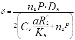
Принимается большее из полученных значений толщин стенки труб.
В формуле nи - коэффициент, равный 1,1 - для участков III и IV категорий и 1,25 - для участков I и II категорий;
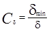
а - коэффициент, принимаемый равным 0,95.
В случае применения труб, испытываемых на заводе при более низких напряжениях, временно на период до 1988 г. допускается для бесшовных труб коэффициент "а" принимать в соответствии с уровнем напряжений при проведении испытаний труб на заводе или гарантируемых заводом.
Другие обозначения приняты согласно СНиП 2.05.06-85.
9.3. Коэффициент надежности для трубопроводов, транспортирующих газообразные среды, принимается как для газопроводов, а транспортирующих жидкие среды - как для нефте- и нефтепродуктопроводов.
Коэффициент надежности - КН при внутреннем давлении в трубопроводе - Р более 10 МПа принимается по таблице 5.
Таблица 5.
|
Значения коэффициента КН в зависимости от величины внутреннего давления в трубопроводе Р, МПа |
||||||||
|
для газопроводов при давлении Р, МПа |
для нефте- и нефтепродуктопроводов при давлении Р, МПа |
|||||||
|
10<Р£15 |
15<Р£20 |
20<Р£25 |
25<Р£30 |
30<Р£35 |
10<Р£15 |
20<Р£25 |
30<Р£35 |
|
|
500 и менее |
1,05 |
1,05 |
1,10 |
1,15 |
1,20 |
1,00 |
1,05 |
1,10 |
|
600 - 1000 |
1,10 |
1,10 |
1,15 |
1,20 |
- |
1,05 |
1,10 |
1,15 |
|
1200 |
1,15 |
- |
- |
- |
- |
1,10 |
- |
- |
|
1400 |
1,20 |
- |
- |
- |
- |
1,15 |
- |
- |
9.4. Трубопроводы, транспортирующие газ, нефть и конденсат, содержащие сернистые примеси, изменяющие механические свойства металла труб и сварных соединений, рассчитываются с учетом положений, изложенных в рекомендуемом приложении 3 к настоящим Hopмам (при отсутствии надежных средств защиты от вредного влияния транспортируемой среды на металл труб).
10. ЗАЩИТА ОТ КОРРОЗИИ
10.1. Противокоррозионную защиту наружной поверхности трубопроводов следует осуществлять в соответствии с ГОСТ 25812-83 а также СНиП 2.05.06-85 и СНиП III-42-80.
10.2. Защита от коррозии трубопроводов должна осуществляться с минимальными затратами на их эксплуатацию при обеспечении требуемой надежности.
10.3. Необходимость защиты промысловых трубопроводов определяется по показателю В:
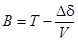
где Dd - допустимое уменьшение толщины стенки из-за коррозии, мм;
V - максимальная скорость коррозии, равная сумме скоростей внутренней и внешней коррозии, мм/год;
T - срок службы трубопровода, лет.
Если B ³ 0, то защита обязательна.
10.4. В первую очередь необходимо решить вопрос о защите той поверхности (внутренней или внешней), которая коррозирует с наибольшей скоростью.
10.5. Защита внутренней поверхности трубопроводов от коррозии осуществляется защитными покрытиями, ингибиторами, подготовкой перекачиваемого продукта с удалением из него агрессивных компонентов и электрохимической поляризацией.
10.6. При подземной и наземной прокладке защита от почвенной коррозии должна быть комплексной, т.е. изоляционными покрытиями и средствами электрохимической защиты.
При надземной прокладке - только изоляционными покрытиями.
В средах, засоренных нефтью и нефтепродуктами, применение битумных изоляционных покрытий недопустимо.
10.7. Выбор методов электрохимической защиты производится на основании технико-экономического сравнения различных вариантов защиты с учетом коррозионной активности среды, срока службы трубопровода и прогнозируемого изменения коррозионных условий в процессе эксплуатации.
10.8. Защита одного трубопровода не должна вызывать усиления коррозии или уменьшения степени защиты на соседних сооружениях.
10.9. Оптимизация параметров электрохимической защиты должна производиться с определением защитного потенциала, обеспечивающего снижение скорости коррозии до величины, обуславливающей минимальные расходы на защиту и ликвидацию последствий коррозии.
10.10. На действующих трубопроводах проект защиты разрабатывается после обследования коррозионного состояния трубопроводов с определением максимальных скоростей внутренней и внешней коррозии, распределения скорости коррозии по территории промысла, состояния изоляционного покрытия, установления основных коррозионных агентов и рекомендациями по ремонту труб, изоляций, улучшения технологии добычи нефти и газа.
Проект защиты должен предусматривать сроки ввода в эксплуатацию средства защиты и сроки осуществления ремонтных работ и проведения организационно-технических мероприятий.
10.11. Проект защиты должен учитывать развитие промысловых коммуникаций и изменение технологического назначения промысловых трубопроводов.
10.12. При определении степени защиты трубопроводов необходимо учитывать изменение давления в них в процессе эксплуатации.
10.13. Применение изолирующих фланцев-вставок для электрического акционирования допускается при условии соблюдения следующих требований:
- обеспечение требуемой надежности этих конструктивных элементов;
- отсутствие вредного коррозионного влияния на соседние сооружения и отсекаемый участок трубопровода.
10.14. При следовании трубопроводов в одном "коридоре" они считаются электрохимически защищенными от подземной коррозии, если потенциал "труба-земля" находится в пределах между минимальным защитным и максимально допустимым потенциалами. Не допускается применять системы защиты с обязательным уравнением защитных потенциалов в точке дренажа на трубопроводах с различными электрическими параметрами.
10.15. Проект защиты должен учитывать специфику строительства трубопроводов в данном регионе с тем, чтобы были обеспечены сроки ввода в эксплуатацию средств электрохимической защиты, предусмотренные ГОСТ 25812-83.
10.16. Ha промыслах с расположением скважины по сетке менее чем 200 м должны предусматриваться глубинные заземления.
Использование ликвидированных скважин в качестве глубинных заземления должно быть согласовано с Горгостехнадзором и санитарно-эпидемиологической службой.
10.17. Схемы и расчет электрохимической защиты различных сооружений приведены в рекомендуемом приложении 4.
РЕКОМЕНДУЕМОЕ
Приложение 1
ТЕПЛОВОЙ РАСЧЕТ НЕФТЕПРОВОДОВ И НЕФТЕПРОДУКТОПРОВОДОВ
Для теплового расчета промыслов нефтепроводов (надземных, наземных, подземных) следует применять формулу
t=t0+(tн-t0)e-ax-DA0,
где 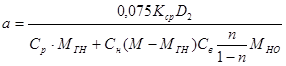
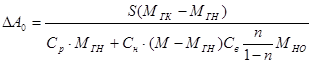
При этом
МГК=1,293·10-3Vk·Dk·MНО,
МГН=1,293·10-3VН·DН·MНО,
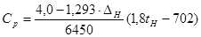
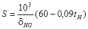
Условные обозначения
VН, VК - рабочий газовый фактор при начальном и конечном давлениях расчетного участка, м3/м3;
DН, DК - относительная удельная плотность газа по воздуху в начале и в конце расчетного участка;
М - весовой расход продукции скважины без воды, т/сут;
МНО - весовой расход разгазированной нефти, т/сут;
МГН, МГК - весовой расход свободного газа в начале и в конце расчетного участка, т/сут;
n - содержание воды в эмульсии, доли весовые;
S - скрытая теплота испарения, Дж/кг;
СН - удельная теплоемкость нефти СН = 2,52·103 Дж/кг·град;
СР - удельная теплоемкость газа при постоянном давлении, Дж/кг·град;
Св - удельная теплоемкость воздуха СВ = 4,2·103 Дж/кг·град;
dНО - плотность разгазированной нефти, кг/м3;
DА0 - дополнительный член, учитывающий влияние выделения газа из нефти на температуру нефтегазовой смеси, °С;
tН - температура среды в начале расчетного участка, °С;
Кср - коэффициент теплоотдачи рассчитывается аналогично Кср для газопроводов;
t0 - температура окружающей среды;
х - текущая координата.
РЕКОМЕНДУЕМОЕ
Приложение 2
ГИДРАВЛИЧЕСКИЙ РАСЧЕТ ТРУБОПРОВОДОВ
Гидравлический расчет трубопроводов при транспорте жидкостей в однофазном состоянии.
1. Гидравлический расчет трубопроводов для однофазного потока производится по формуле:
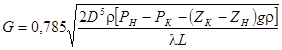
где:
G - массовый расход транспортируемой среды, кг/с;
D - диаметр трубы, м;
r - осредненная плотность транспортируемой среды, кг/м3;
РН, РК - давление в начале и в конце трубопровода, МПа;
ZН, ZК - геометрические отметки начальной и конечной точек трубопровода, м;
l - коэффициент сопротивления трубопровода, определяемый по формуле:
l=l0E (2)
l0 - коэффициент гидравлического сопротивления трению, рассчитываемый по формуле:
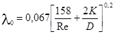
Re - число Рейнольдса определяется по формуле:
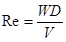
V - кинематическая вязкость среды, м2/c;
W - скорость потока, м/с;
K - эквивалентная шероховатость внутренней поверхности трубы, К = 0,5·10-4 м;
E - коэффициент, учитывающий местные сопротивления, повороты и так далее, E = 1,1.
2. Величины гидравлического уклона в трубопроводах, транспортирующих воду, не имеющую коррозионных или других свойств, могущих привести к интенсивному зарастанию труб, следует определять в соответствии с СНиП III-30-74.
3. Величины гидравлического уклона в трубопроводах, транспортирующие пластовые и сточные воды, следует определять в соответствии с СНиП II-32-74.
4. Расчетные значения скорости движения жидкости в высоконапорных водоемах следует принимать:
- до 1,5 м/с при закачке воды, не имеющей коррозионных свойств;
- не более 1,0 м/с при закачке пластовых и сточных вод.
Примечание: при промывке водоводов и нагнетательных скважин, скорость движения воды в трубопроводах допускается увеличить до 3 - 4 м/с.
5. Потери давления в высоконапорных водоводах до нагнетательных скважин рекомендуется принимать не более 3 - 5 % от давления нагнетания воды.
6. Скорости движения воды в трубопроводах систем производственного водоснабжения принимаются на основе технико-экономических расчетов.
7. Гидравлический расчет трубопроводов, транспортирующих газонасыщенные жидкости (нефть, нестабильный конденсат, сжиженные газы и т.д.) в однофазном состоянии также производится по формуле (1).
Гидравлический расчет газопроводов
8. Гидравлический расчет газопроводов, транспортирующих сухой газ, выполняется по ОНТП 51-1-85 ч. 1.
9. Гидравлический расчет газопроводов с учетом содержания в газе свободной жидкости до 50 гр. на нм3 газа) производится по формуле:
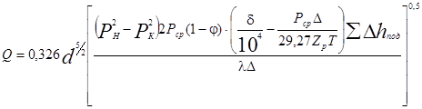
Q - производительность газопровода, нм3/сутки;
РН, РК - соответственно начальное и конечное давление на участке;
D - относительный удельный вес газа по воздуху;
SDhпод - сумма высот восходящих участков трубопровода;
1-j - истинное содержание жидкости (доля сечения трубы, занятая жидкостью);
Гидравлический расчет трубопроводов, транспортирующих газожидкостные смеси
10. Гидравлический расчет трубопроводов для транспорта газожидкостных смесей выполняется по участкам эквивалентной трассы, представляющей последовательность прямолинейных нисходящих и восходящих участков, построенных из условия равнозначимости с гидравлической точки зрения реальной и эквивалентной трасс.
11. Восходящим участком эквивалентной трассы считается такой отрезок между перевальными точками реального профиля, по которому независимо от количества и углов наклона промежуточных участков движение смеси происходит только на подъем.
а) За длину i-го эквивалентного подъема участка принимается общая длина восходящего участка реальной трассы между 2-мя перевальными точками:
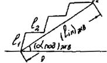 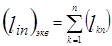
где lkn - длина к-го участка, входящем в подъемный участок между перевальными точками;
б) За угол наклона восходящего эквивалентного участка принимается осредненный угол наклона, определяемый из условия
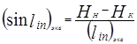
где: НН, НК - отметки начальной и конечной перевальных точек восходящего участка.
12. Нисходящим участком эквивалентной трассы считается такой отрезок реальной трассы, на котором течение смеси происходит на спуск при постоянном угле наклона.
В эквивалентный нисходящий участок могут бить включены сопряженные нисходящие участки, если их угол наклона изменяется по отношению к первому (по ходу движения) участку не более чем на 10 %.
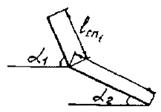 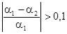
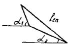 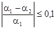
а) За расчетную длину i-го нисходящего участка принимается общая длина всех отрезков реальной трассы, вошедших в нисходящий участок эквивалентной трассы.
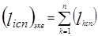
где lk cp - длина к-го участка, входящего в нисходящий участок реальной трассы.
б) За угол наклона нисходящего участка эквивалентной трассы принимается осредненный угол, определяемый из условия:
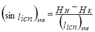
где: НН, НК - отметки начальной и конечной точек эквивалентного нисходящего участка.
13. Определение режима перекачки газожидкостной смеси на нисходящем участке трубопровода:
- определяется величина
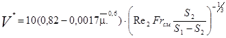 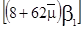
где = m2/m1 - приведенная вязкость
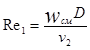 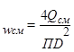 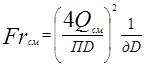
при V* £ 1 - режим течения кольцевой;
V* > 1 - режим течения пробковый или расслоенный
- определяется величина Fz*
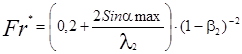
где amax - максимальный угол наклона между двух участков эквивалентной трассы трубопровода;
l2 - коэффициент гидравлического сопротивления, определяемый методом последовательного приближения по числу Рейнольдса, соответствующему скорости безнапорного течения жидкости в нисходящем участке трассы с максимальным углом наклона.
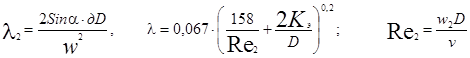
где Кэ - эквивалентная шероховатость
b2 - расходное газосодержание
При Frсм ³ Fr* на дачном участке трубопровода имеет место пробковый режим течения смеси.
При Frсм < Fr* на данном участке трубопровода имеет место расслоенное течение смеси.
14. Определение перепада давления на расчетном участке при кольцевом и пробковом течении определяем по формуле:
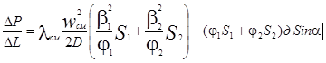
где j1 - истинное объемное содержание жидкости в потоке
j2 = 1 - j1 (17)
lсм - коэффициент гидравлического сопротивления смеси, определяемый по формуле:
lсм = l0y (18)
где: y - приведенный коэффициент сопротивления
l0 - коэффициент гидравлического сопротивления при течении однородной жидкости
Величина j1 при нисходящем течении газожидкостной смеси в кольцевом режиме определяется по формуле:
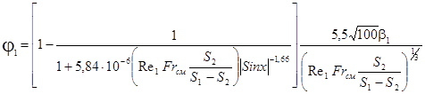
где:
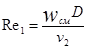
- Величина j1 при нисходящем пробковом потоке определяется по формуле:
j1=1-К1/b2 (20)
К1 - коэффициент, учитывающий влияние вязкости жидкости
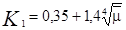
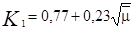
- Приведенный коэффициент гидравлического сопротивления при кольцевом режиме определяется по формуле:
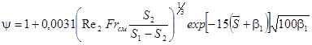
Коэффициент гидравлического сопротивлении при течении однородной жидкости l0
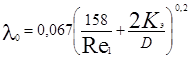
- Приведенный коэффициент гидравлического сопротивления для пробкового потока:
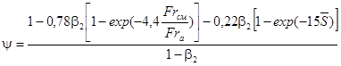
Значение Fra определяется по соотношениям
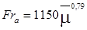
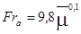
- Для пробкового потока l0 определяется по формуле:
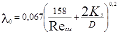
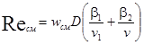
15. При расслоенном режиме течения гидравлический расчет производится по формуле:
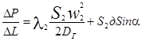
где:
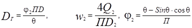
Истинное газ содержание определяется по формуле:
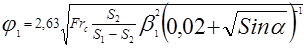
16. Определение режима перекачки газожидкостной смеси на восходящем участке трубопровода:
- определяется величина V* по формуле (12) при V* £ 1 имеет место кольцевой режим течения смеси, при V* > 1 реализуется пробковый режим течения смеси.
17. Гидравлический расчет восходящего участка трубопровода производится по формуле:
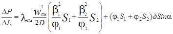
где: j1 - истинное объемное содержание жидкости в потоке
lсм - коэффициент гидравлического сопротивления, определяемый по формуле (18)
- Величина j1 для восходящего кольцевого потока определяется формулой:
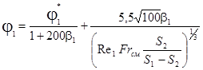
где j1* - истинное объемное содержание жидкости при нулевой подаче жидкости;
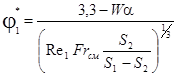
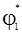
где
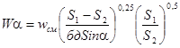
- Для пробкового восходящего потока
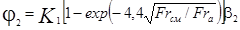
Здесь коэффициент К1 определяется по формуле (21)
- При восходящем кольцевом течении смеси величина y определяется по формуле (22).
- При восходящем пробковом течении смеси величина y определяется по формуле (24).
18. Ввиду сложности гидравлического расчета трубопроводов, транспортирующих газожидкостные смеси, ВНИИГАЗом разработана "Инструкция по гидравлическому расчету шлейфовых трубопроводов для газожидкостных смесей" с применением ЭВМ.
РЕКОМЕНДУЕМОЕ
Приложение 3
РАСЧЕТ ТРУБОПРОВОДОВ, ТРАНСПОРТИРУЩИХ СРЕДЫ, СОДЕРЖАЩИЕ СЕРОВОДОРОД
1. Настоящие положения распространяются на вновь строящиеся и рекомендуемые промысловые стальные трубопроводы, предназначенные для транспорта сред c парциальным давлением сероводорода от 300 МПа до 1 МПа.
2. Толщину стенки (номинальную) трубопроводов, указанных в п.п. 2.1 и 2.2 следует определять по формуле:
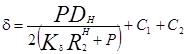
При наличии продольных осевых сжимающих напряжений производится расчет в соответствии с требованиями СНиП 2.05.06-85.
Входящие в формулу величины: Кd - коэффициент уровня допускаемых растягивающих напряжений, определяемый по таблице:
|
Категория участка трубопровода |
Значение коэффициента Кd в зависимости от содержания сероводорода в газе |
|
|
среднее |
низкое |
|
|
В |
0,4 |
0,5 |
|
I, II |
0,5 |
0,6 |
|
III, IV |
0,6 |
0,65 |
Толщину стенки трубопроводов заводнения и захоронения пластовых и сточных вод следует определять по формуле:
___________
* Формула 2 внесена институтом Гипровостокнефть.
где: Рисп - испытательное гидравлическое давление, МПа:
d - расчетная толщина стенки с учетом минусового допуска на разностенность, мм;
m - коэффициент, учитывающий минусовой допуск на разностенность (при d£15 мм m=0,85; при с d>15 мм, m=0,875).
n - допускаемое напряжение равное 40% от временного сопротивления разрыва для принятой марки стали, Па.
DН - наружный диаметр трубы, мм;
С1 - минусовой допуск на толщину стенки трубы, мм;
С2 - добавка к толщине стенок на общую коррозию, определяемую экспериментально или расчетом, исходя из расчетной скорости коррозии трубной стали в данной среде с учетом проектируемых средств защиты (ингибиторы, осушка газа, применение покрытий и др.), проектируемого срока эксплуатации трубопровода, ожидаемого падения внутреннего давления по формуле:
С2=dк.ед·t-(d-dt) (3)
где dк.ед - уменьшение толщины стенки труб за единицу времени от внутренней коррозии
t - расчетный интервал времени эксплуатации трубопровода.
d - расчетная (номинальная) толщина стенки труб в начале эксплуатации трубопровода;
dt - расчетная толщина стенки труб в конце расчетного интервала времени эксплуатации трубопровода, подсчитанная с учетом падения в нем давления.
При отсутствии возможности определения скорости общей, коррозии на заданном объекте расчетным или опытным путем допускается приближенное определение C2 по аналогии с другими, ранее запроектированными объектами с близкими условиями эксплуатации труб.
Во всех случаях величина такой добавки C2 должна быть не менее 2 мм.
Надбавка на внутреннюю коррозию производится в тех случаях, когда коррозия внутренней поверхности труб не может быть предотвращена или применение специальных защитных средств нерационально (устанавливается на основании технико-экономических расчетов).
3. Проверка по прочности, деформациям, на общую устойчивость в продольном направлении подземных и наземных (в насыпи) трубопроводов проводится в соответствии с положениями раздела 9 настоящих Норм и СНиП 2.05.06-85.
Суммарные продольные и растягивающие напряжения от внутреннего давления, расчетного температурного перепада и упругого изгиба должны удовлетворять условию:
(4)
РЕКОМЕНДУЕМОЕ
Приложение 4
СХЕМЫ ЭЛЕКТРОХИМИЧЕСКОЙ ЗАЩИТЫ СООРУЖЕНИЙ
1. Схемы электрохимической защиты подземных сооружений промысла служат основанием для расчета параметров защитных устройств и выбираются на основе схемы расположения промысловых сооружений с учетом наличия источников питания и условия обеспечения надежной эксплуатации.
2. При выборе схем размещения защитных устройств и расчета их параметров, рассматривают раздельные группы или отдельные сооружения, такие как: скважины или кусты скважин; многониточные системы трубопроводов и однониточные трубопроводы; групповые пункты в другие сосредоточенные объекты. Причем схемы защиты всех групп сооружений должны быть согласованы между собой.
3. Защита подземных сооружений площадок насосных станций осуществляется несколькими установками катодной защиты.
На рис. 1 приведен пример выбора точек дренажа на площадке насосной станции.
4. Анодные заземления при защите подземных коммуникаций площадочных (УКПГ, ГСП, КС, НС, ДКС и пр.) сооружений относят на расстояние не менее 300 м или применяют глубинные заземления скважинного типа.
5. На скважинах защита обсадных колонн обеспечивается совместно с выкидными линиями (шлейфами). Точка дренажа должна быть отнесена на расстояние не менее 50 м от устья скважины.
6. Электрохимическая защита трубопроводов должна быть обеспечена по всей их длине.
При длине выкидных линий более 3 км необходимо установить дополнительные средства катодной защиты (рис. 2), количество и место установки которых уточняется расчетом (для действующих сооружений - с помощью опытной катодной станции).
Рис. 1 Пример размещения точек дренаж на площадке насосной станции.
Рис. 2. Пример размещения средств защиты на промысловых коммуникациях.
1 - площадка ДНС; 2 -
шлейфы (выкидные линии); 3 - скважины; 4 - станция катодной защиты;
5 - анодные заземления; 6 - контрольно-измерительная колонка; 7 - точка
дренажа;
8 - дополнительная УКЗ (при длинных шлейфах).
7. Подземные сооружения групповых пунктов защищают от коррозии либо одной (кустовой), либо несколькими катодными установками (рис. 3). Радиус защиты кустовой катодной установки определяется как средняя длина шлейфов, увеличенная на 300 м. Удаленные скважины защищают дополнительными средствами защиты.
8. Электрохимическая защита параллельных трубопроводов должна быть осуществлена по возможности совместно. Для защиты каждых 3 - 4 труб необходима одна катодная станция. Присоединение трубопроводов к источнику тока может быть выполнено через перемычку или раздельно через регулируемые резисторы.
Точка дренажа должна располагаться на трубопроводе с меньшим переходным сопротивлением "труба-земля", остальные трубопроводы перемыкаются. Сопротивление перемычки должно быть не ниже величины, определяемой по формуле
,
где a1 и a2 - постоянные распространения тока соответственно 1-го и 2-го трубопроводов (a1 < a2);
Z2 - характеристическое сопротивление 2-го трубопровода, с меньшим переходным сопротивлением. Ом;
l - плечо защитной зоны, м.
При числе труб 4 точку дренажа каждой из станций оборудуют на расстоянии 1 км одна от другой.
9. Выбор защитных схем противокоррозионных покрытий для морских подводных трубопроводов следует производить в соответствии с ОСТ 51.66-80.
10. Расчет электрохимической защиты морских подводных трубопроводов производить в соответствии с ОСТ-51-114-83.
Рис. 3. Пример размещения средств катодной защиты при
крестообразном
расположении скважин куста.
11. На всех трубопроводах необходимо установить контрольно-измерительные пункты (КИП) с шагом через 1 км.
Кроме того КИП следует оборудовать в точках дренажа УКЗ, на пересечении коридоров труб у устья скважин, на выходе коммуникации с площадки ДНС, КС и т.п. (в 25 м), на переходах через водные преграды, автомобильные и железные дороги. При длине трубопроводов менее 1,5 км КИП следует устанавливать через 0,5 км.
Расчет параметров катодной защиты
12. Основным параметром катодной защиты является сила тока, а для протяженных сооружений (трубопроводов) и длина защитной зоны.
13. В зависимости от значения этих параметров при проектировании решается вопрос о выборе мощности защитных устройств, типа и количества анодных заземлений, длине дренажных проводов, а также о размещении средства защиты по промыслу.
14. Расчет параметров катодной защиты нефтепромысловых сооружений ведется раздельно для скважин, коммуникации и выкидных линий. В тех случаях, когда длина выкидных линий невелика, защита по всей длине их может быть обеспечена работой защитных устройств скважин и коммуникаций площадки. Расчет параметров защиты для этих линий не проводится.
Расчет электрических параметров сооружений
15. Продольное сопротивление трубопроводов, Ом/м
, (1)
приведено в таблице
где D - диаметр сооружения, м;
d - толщина стенки сооружения, м;
S - удельное сопротивление трубной стали, Ом.мм2/м.
16. Переходное сопротивление "труба-земля" может быть определено по результатам измерений (рис. 4) и расчету по приближенному выражению:
(2)
где: UТЗ1, и UТЗ2 - наложенная разность потенциалов "труба-земля" соответственно в точках Х1 и Х2 (рис. 4), В;
l1,2 - расстояние между точками измерений, м.
Наложенную разность потенциалов "труба-земля" определяют по данным измерений следующим образом:
UТЗ1=UТЗМ1-Ul1 (3)
где: UТЗМ1 - общая защитная разность потенциалов "труба-земля", измеренная в точке Х1, по отношению к медносульфатному электроду сравнения, МЭС, В;
Ul1 - естественная разность потенциалов "труба-земля" в точке X1, по МЭС, В.
Аналогично определяется наложенная разность потенциалов "труба-земля" в точке Х2.
При проведении измерений по определению переходного сопротивления необходимо соблюдать следующие условия:
1) работает только одна установка катодной защиты, соседние с ней установки должны быть выключены;
2) с целью исключения влияния поля анодного заземления точка Х1 должна находиться на расстоянии X1 ³ 5у (у - расстояние от трубопровода до анодного заземления), при этом где l1,2 = Х2 - X1;
3) точки измерений следует выбирать таким образом, чтобы смещения разности потенциалов UТЗ1 и ТТЗ2 были не меньше 0,1 В и отличались друг от друга не менее, чем на 0,05 В.
Рис. 4. Схема определения переходного сопротивления "труба-земля" изолированных трубопроводов
17. По данным обследований состояния защищенности большого числа магистральных трубопроводов и обработки результатов измерений на них современными статистическими методами начальное значение переходного сопротивления может быть принято для сооружений, изолированных покрытиями на битумной основе R'ПН = 3000 Ом.м2, а для сооружений изолированных планочными покрытиями R'ПН = 5000 Ом.м2.
Данные значения относятся к трубопроводам, при строительстве которых выполнены требования технологического контроля, включая поиск дефектов искателем повреждений и проверку состояния изоляции методом катодной поляризации. Для определения переходного сопротивления на единицу длины сооружения следует пользоваться формулой Ом.м: где D - диаметр трубопровода, м.
18. Постоянная распространения тока вдоль сооружения:
(4)
где: R - продольное сопротивление сооружения, Ом/м;
RП - переходное сопротивление сооружения, Ом.м.
Постоянная распространенная тока вдоль трубопровода является основным параметром, характеризующим длину защитной зоны. С уменьшением величины a длина защитной зоны увеличивается.
Постоянная распространения тока вдоль сооружения как функция времени определяется выражением
где aН - значение постоянной распространения в начальный период эксплуатации сооружения
(6)
b - коэффициент, характеризующий скорость изменения переходного сопротивления во времени, 1/год;
среднее значение b = 0,125 1/год для конкретных условий оно может быть уточнено на основе долговременных наблюдений.
19. Характеристическое сопротивление трубопровода определяют по формуле:
, Ом (7)
Если точка дренажа разделяет трубопровод на плечи с различными параметрами, то характеристические сопротивления правого и левого плеча трубопровода будут, соответственно, равны
(8)
где RП и RЛ - продольное сопротивление соответственно правого и левого плеч трубопровода, Ом/м,
и - переходное сопротивление "труба-земля", соответственно правого и левого плеч трубопровода, Ом.м.
Входное сопротивление в этом случае определяется выражением
(9)
Величина входного сопротивления в значительной степени определяет силу тока катодной установки. С увеличением Zв сила тока катодной установки J уменьшается.
Если характеристическое сопротивление правого и левого плеч трубопровода одинаково (Zп = Zл = Z), то входное сопротивление будет равно
(10)
20. Входное сопротивление трубопровода как функцию времени Zв(t) следует определять из выражения
(11)
или
, (12)
где Zн - входное сопротивление трубопровода в начальный период эксплуатации, Ом
21. Для параллельно идущих подземных коммуникаций рассчитываются параметры эквивалентного сооружения.
Продольное сопротивление эквивалентного сооружения, Ом.м:
, (14)
(16)
где RЭ+2, RЭ1-3, …; RЭ1-m, RЭ1-n=RЭ - последовательные значения продольного сопротивления эквивалентного сооружения при учете в расчете 1, 2, 3, .... m, n-ой коммуникации, Ом/м;
R1, R2, R3, …, Rm - продольное сопротивление соответственно 1, 2, 3, ..., m, n-ого параллельных сооружений, Ом/м.
22. Переходное сопротивление эквивалентного сооружения, Ом/м:
, (17)
где Rп1 и Rп2 - переходное сопротивление 1-го и 2-го параллельных сооружений, Ом.м;
Rп12 - взаимное переходное сопротивление между сооружениями:
(18)
где Sг - удельное сопротивление грунта, Ом.м;
в - расстояние между сооружениями, м;
a1 и a2 - постоянная распространения тока вдоль, соответственно, 1-го и 2-го сооружений.
При удельном сопротивлении грунта больше 100 Ом.м и в 50 м взаимное переходное сопротивление между сооружениями можно не учитывать.
Расчет катодной защиты подземных сооружений, площадок, насосных станций
23. Расчет катодной защиты подземных сооружений нефтегазопромыслов сводится к определению количества и мощности катодных станций, которые необходимо запроектировать.
24. Мощность катодной станции в общем случае определяется потребностью в защитном токе. Защита подземных сооружений площадок насосных станций нефтепромыслов требует больших энергетических затрат и осуществляется несколькими установками катодной защиты (УКЗ) значительной мощности с распределенными по площадке точками дренажа. Количество установок катодной защиты площадки определяется общей потребностью в защитном токе и мощностью выбранных защитных устройств.
25. Критерием защищенности подземных сооружений площадки считается минимальная разность потенциалов "сооружение-земля" U'м, величина которой устанавливается в зависимости от конкретных условий эксплуатации и равна: -1,0 В в солончаках; 0,95 В в присутствии ионов S, а во всех прочих случаях принимается равной - 0,85 В по отношению к медносульфатному электроду сравнивая (МСЭ). Минимальное смещение разности потенциалов на защищаемых сооружениях должно быть равно:
Uм=U'м-Uе (19)
где U'м - минимальная защитная разность потенциалов "сооружение - земля", В;
Ue - естественная разность потенциалов "сооружение-земля" по МСЭ, В.
26. Совместно с подземными сооружениями площадки насосной станции защищаются и подземные промысловые коммуникации, находящиеся в радиусе 200 м вокруг нее. Сила тока, необходимая для защиты всех этих сооружений, определяется по формуле:
, (20)
где Uм - минимальное смещение разности потенциалов "сооружение-земля", В;
Ue - площадь поверхности подземных сооружений, находящихся на площадке и в радиусе 200 м вокруг нее, М;
k - коэффициент неравномерности распространения тока на сооружениях площадки (k = 1,2);
Rп - переходное сопротивление "сооружение-земля" подземных коммуникаций, Ом.м.
27. Количество установок катодной защиты, необходимых для защиты площадки ДНС, находится как соотношение:
, (21)
где J1 - сила тока одной катодной установки, А;
J - общая сила тока, необходимая для защиты всех подземных коммуникаций площадки.
Расчет катодной защиты обсадных колонн скважин
28. Для проектирования средств защиты скважины необходимо знать количество скважин в кусте, глубину заложения скважины, ее диаметр и геоэлектрический разрез.
(22)
где d0 - допустимое коррозионное уменьшение толщины стенки трубы, мм;
Кн - скорость коррозии, мм/год;
Т - срок службы, годы.
30. Минимальная положенная разность потенциалов на забое скважины находится по формуле
(23)
31. Разность потенциала на устье скважины находится из выражения:
U0=Uмсch(aclc)B (24)
где lc - длина скважины, м;
aс - постоянная распространения тока вдоль скважины, 1/м.
32. Сила тока, необходимая для защиты обсадных колонн скважин, равна:
, (25)
где Zc - характеристическое сопротивление скважины, Ом.
33. Положенная разность потенциалов в точке дренажа, расположенной на расстояние lтд от устья скважины
Uтд=Uмсch(aclc)·ch(aш·lтд), (26)
где aш - постоянная распространения тока вдоль шлейфа, 1/м;
lтд - расстояние от точки дренажа до устья скважины (lтд = 50 м).
34. Сила тока, необходимая для защиты системы "шлейф-скважина", определяется:
, (27)
35. Сила тока, требующаяся для защиты всех систем "шлейф-скважина" куста, определяется как сумма:
(28)
где n - число скважин в кусте, шт.
36. Длина защитной зоны установки катодной защиты системы "шлейф-скважина" при распространении ее защитного действия вдоль шлейфа (выкидной линии) определяется по формуле, приведенной ниже (см. п. 37).
Расчет параметров катодной защиты промысловых трубопроводов
37. Длину защитной зоны катодной установки на любой год эксплуатации определяют по формуле:
, м (29)
где Uтзм - минимальная (по абсолютной величине) наложенная защитная разность потенциалов "труба-земля", В;
Uтз0 - наложенная разность потенциалов в точке дренажа, В;
Кв - коэффициент, учитывающий взаимовлияние соседних катодных установок (для одиночных УКЗ Кв = 1; для УКЗ, работающих рядом с соседними Кв = 0,5);
y - расстояние между трубопроводом и анодным заземлением, м,
rг - удельное электрическое сопротивление грунта в поле токов катодной защиты, Ом.м.
Уравнение решают методом последовательного приближения, начальное значение определяют без учета члена . Длину защитной зоны с точностью до третьей значащей цифры находят обычно двумя итерациями. Если член меньше другого слагаемого, то им можно пренебречь.
38. Оптимальное расстояние между трубопроводов и анодным заземлением принимают равным 7rг, исходя из условий: наименьшего удельного электрического сопротивления грунта в месте установки анодного заземления, удобства прокладки дренажной линии, наличия свободного участка и с учетом формулы 5.
39. Силу тока катодной установки на любой год эксплуатации можно определить из выражения
(30)
40. Напряжение на выходе катодной станции определяется по формуле:
u=J[Zв(t)+Rпр+Rаз], В, (31)
где Rпр - сопротивление дренажных проводов, соединяющих катодную станцию с трубопроводом и анодным заземлением, Ом,
Rаз - сопротивление растеканию анодного заземления, Ом.
Сопротивление проводов определяют из выражения
, (32)
где ус - длина спусков провода с опор к катодной станции, анодному заземлению и трубопроводу, м;
Sn - сечение проводника, мм2;
rм - удельное сопротивление проводника, Ом.мм2/м.
Величина Rаз зависит от конструкции заземления, числа электродов в нем, удельного электрического сопротивления грунта и других факторов.
41. Мощность на выходе катодной станции определяется по формуле:
W=JU, B (33)
В соответствии с рассчитанными силой тока, напряжением и мощностью выбирается тип катодной станции.
Расчет катодной защиты подземных сооружений группового пункта газового промысла
42. Для проектирования средств защиты подземных сооружений газовых промыслов необходимо знать: количество скважин и количество кустов (групповых пунктов) на промысле; количество скважин в кусте и их размещение; глубину и конструкцию скважин с указанием параметров цементирования; диаметр и толщину стенки обсадных труб; геоэлектрический разрез скважин и характеристику водоносных горизонтов.
43. Расположение скважин и шлейфов в групповом пункте (кусте) может быть рассмотрено как веерное или крестообразное. В зависимости от этого разработаны две методики расчета параметров катодной защиты, причем защита всех подземных сооружений группового пункта (ГП) осуществляется одной кустовой катодной установкой при веерном расположении скважин, или же несколькими - при крестообразном расположении скважин.
Расположение, скважин группового пункта веерное
44. Минимальную наложенную разность потенциалов на забое скважин (Uмс) и в начале шлейфа (Uмш) определяют с учетом необходимой степени защиты аналогично пп. 29 и 30.
45. Разность потенциалов в начале шлейфа определяется из выражения:
(34)
где i - номер системы "шлейф-скважина";
lci - длина скважины, м; lшi - длина шлейфа, м;
aci - постоянная распространения тока вдоль скважины, 1/м;
aшi - постоянная распространения тока вдоль шлейфа, 1/м;
Zci - характеристическое сопротивление скважины, Ом;
Zшi - характеристическое сопротивление шлейфа, Ом.
Определяем защитную силу тока системы "шлейф- скважина":
(35)
46. Смещение разности потенциалов на забое скважины определяется из выражения:
(36)
47. Если Uмеi>Uмеi для среднего шлейфа, то расчет ведется по следующим формулам:
Uдi=Uос-Uшнi, (37)
(38)
где Uдi - необходимое смещение потенциала на устье скважины от дополнительного источника, В;
Jдi - сила тока дополнительного источника питания, А.
Если условие не выполняется, то расчет ведется в следующей последовательности.
48. Определяем силу тока групповой (кустовой) катодной установки.
49. Если условие Иос ³ Имш не выполняется, то приравниваем Иос = Имп и определяем
(39)
50. Если Иос ³ Имп, то расчет ведут далее и определяют силу тока, необходимую для защиты обсадной колонны скважины (на устье):
(40)
где Zc - характеристическое сопротивление скважины, Ом.
51. Разность потенциалов в конце шлейфа (для средних) составит:
, (41)
где lм - длина шлейфа, м;
aш - постоянная распространения тока вдоль шлейфа, 1/м;
Zш - характеристическое сопротивление шлейфа. Ом.
Сила тока, необходимая для защиты системы "шлейф-скважина" (для среднего шлейфа):
(42)
(43)
, (44)
где Sгр - площадь подземных коммуникаций группового пункта, м2;
Rпер.гр - переходное сопротивление подземных коммуникаций группового пункта, Ом.м2.
52. Напряжение на выходе катодной станции определяем из выражения:
U=Jобщ·(Rаз+Rпр), (45)
где Rаз - сопротивление анодного заземления, Ом:
Rпр - сопротивление проводов:
, Ом (46)
здесь Sп - сечение дренажного провода, мм2;
rм - удельное электросопротивление материалов проводов, Ом.мм2/м;
Jп - длина дренажного провода, м;
Jп=rКпр, (47)
Кпр - коэффициент пропорциональности (Кпр=7), 1/Ом;
r - удельное электрическое сопротивление грунта, Ом.м.
53. Мощность катодной станции равна:
W=JобщU, Вт (48)
54. Для уменьшения времени, затрачиваемого на расчет параметров катодной защиты обсадных колонн скважин шлейфов и коммуникаций группового пункта, ЮжНИИгипрогазом разработана специальная программа расчета параметров защиты.
Расположение группового пункта крестообразное
55. Минимальную наложенную разность потенциалов на забое скважины определяют из выражения (15), с учетом выражения (13).
56. Разность потенциалов в точке дренажа на объединенных шлейфах, имеющих перемычку в точке дренажа, будет:
(49)
где x - расстояние между точкой дренажа и групповым пунктом;
i - количество объединенных (в точке дренажа), шлейфов.
Расчет производится отдельно для каждого из объединенных шлейфов. В дальнейшем в расчет принимается максимальное (Иоmax) значение Иоi.
57. Сила тока, необходимая для защиты систем "шлейф-скважина" (объединенных), составит:
(50)
Суммарная сила тока, необходимая для защиты системы "шлейф-скважина", равна:
(51)
58. Разность потенциалов на групповом пункте с учетом необъединенных "шлейфов-скважин" одного из направлений (см. рис. 3):
(52)
где j - число необъединенных шлейфов-скважин.
59. Сила тока, необходимая для защиты системы "шлейф-скважина" (необъединенных), составит:
(53)
60. Сила тока, необходимая для защиты группового пункта:
, (54)
, (55)
где R'п.гр - удельное переходное сопротивление коммуникаций группового пункта, Ом.м2;
Sгр - поверхность подземных сооружений группового пункта, м.
61. Суммарная защитная сила тока, необъединенных скважин и группового пункта:
Jнс=SJшсj+Jгр. (56)
62. Разность потенциалов "труба-земля" в точке дренажа:
и'о=игр maxch(aшэx)+Jнс·Rшэ, (57)
где aшэ - постоянная распространения тока вдоль эквивалентного сооружения (шлейфа);
Rшэ - продольное сопротивление эквивалентного сооружения, Ом/м.
63. При И0 max³И01-x выбрано правильно, при И0 max<И01-x необходимо изменить.
64. Сила тока установки катодной защиты будет:
Jукз=Jоб+Jнс (58)
65. Выбор величины x производится на основе технико-экономических показателей различных вариантов.
Методически выбор x производится путем определения минимальной стоимости варианта.
66. Общая годовая стоимость катодной защиты:
Сукс=Скс+Са+Сп+Соб+Сэ, (59)
где Скс - приведенные затраты на сооружение катодной станции и питающей линии, руб.:
Скс=С0·Е, (60)
здесь Скс - единовременные затраты на сооружение катодной станции и питающей линии, руб.;
Е - нормативный коэффициент эффективности, 1/год:
С0 - приведенные затраты на сооружение анодного заземления, руб.:
С0=Са·NзЕ, (61)
здесь Са - стоимость сооружения анодного заземления, включая стоимость соединительного провода, руб.;
Nз - число заземлителей в анодном заземлении, шт.;
Сп - приведенные единовременные затраты на сооружение дренажной линии постоянного тока, руб.;
Сп=(Сп1уа+Сп2x)Е, (62)
где Сп1 - стоимость дренажной анодной линии (от катодной станции до анодного заземления), руб./м;
Сп2 - стоимость дренажной линии (от точки дренажа до катодной станция), руб.м;
уа - длина дренажной линии, м;
Сз - стоимость электроэнергии, руб.;
x - длина дренажной катодной линии;
, (63)
где Сз - стоимость 1 кВт.ч. электроэнергии, руб./кВт.ч.;
Rп - сопротивление цепи катодной защиты, Ом;
Rц=Rпр+Rз (64)
здесь Rпр - сопротивление дренажной линии, Ом;
(65)
где и - удельное электрическое сопротивление материала проводов соответственно для анодной и катодной линии, Ом.мм2/м;
S1 и S2 - сечение проводов соответственно анодной и катодной линии, мм2;
Rз - переходное сопротивление анодного заземления
(66)
где Rэ1 - переходное сопротивление единичного анодного заземления. Ом;
iэ - коэффициент экранирования, кг/м3;
Nэ - количество заземлителей в анодном заземлении, шт.;
Соб - стоимость годового обслуживания, руб/год.
67. Напряжение на выходе катодной станции:
U=Jукс(Rз+Rпр) (67)
68. Мощность катодной станции:
W=U Jукс (68)
69. Ввиду сложности вычислений рекомендуется использовать специальную программу расчета параметров катодной защиты сооружений при крестообразном расположении скважины в кусте, разработанную институтами "ЮжНИИгипрогаз" и "ВНИИСТ".
70. При крестообразном расположении скважин целесообразно каждое направление защищать одной катодной установкой, при этом сила тока должна быть 20 + 30 A (в предположении, что в каждом направлении имеется 3 + 6 скважин).
Выбор типа анодного заземления
71. Типы анодного заземления для защиты промысловых трубопроводов выбираются в соответствии с грунтовыми условиями, наличием свободных площадок и величиной защитного тока и могут быть глубинными и неповерхностными.
72. Глубинные анодные заземления позволяют осуществлять совместную защиту большого комплекса сооружений; анодное влияние глубинного заземлителя в сравнении с подпочвенными во много раз меньше; глубинные анодные заземления обеспечивают более равномерное распределение тока по поверхности защищаемых сооружений и занимают незначительную площадь.
73. Подповерхностные заземления для защиты промысловых трубопроводов рекомендуется выполнять горизонтальными или вертикальными из обрезков стальных труб, соединительных в группы.
74. Для горизонтального электрода, установленного в грунт, сопротивление растеканию может быть определено по формуле:
(69)
где: rз - удельное сопротивление грунта, Ом.м.;
lэ - длина электрода, м;
dэ - диаметр электрода, м;
hэ - расстояние от поверхности до середины заземления, м;
75. Для вертикального электрода или сваи установленной в грунт, определение растеканию определяется из выражения:
76. Количество электродов в заземлении определяется:
где R1 - сопротивление растеканию одного электрода, Ом.
Rаз - сопротивление растеканию анодного заземления, Ом.
Сопротивление растеканию анодного заземления принимается равным 1 Ом, в тех случаях, когда ток защитного устройства велик (как правило, для подземных коммуникаций площадок насосных и компрессорных станций). Сопротивление анодного заземления должно быть ниже, порядка 0,2 Ом. Сопротивление анодного заземления ниже 1 Ом может быть обеспечено с помощью свайного или скважинного типа заземления.
77. Срок службы анодного заземления определяется по формуле
(70)
где G - вес заземления, кг;
g - потери веса заземления, кг/А-год;
Jз - сила тока, стекающего с заземления, А;
К - коэффициент запаса, равный 1,2.
Параметры катодной защиты для ориентировочных расчетов
78. Максимальная защитная плотность тока для трубопроводов определяется по таблице
|
Удельное сопротивление грунта, Ом.м. |
Минимальная защитная плотность тока, Ма/м2 |
|
< 20 |
2 |
|
20+100 |
0,6 |
|
> 100 |
0,3 |
79. Защитная сила тока для обсадных колонн скважин определяется по таблице
|
Длина скважины, м |
Сила тока, А |
|
1000 |
4 |
|
1500 |
6 |
|
2000 |
8 |
|
2500 |
10 |
|
3000 |
12 |
80. При расчетах электрохимической защиты промысловых сооружений в северных условиях необходимо ввести коэффициент запаса по напряжению, равный 1,5.
РЕКОМЕНДУЕМОЕ
Приложение 5
КЛАССИФИКАЦИЯ ТОРФЯНЫХ ОСНОВАНИЙ БОЛОТ
1. Классификация торфяных оснований болот с точки зрения прокладки трубопроводов представлена в таблице 1.
2. Тип торфяного основания А, Б, В определяет возможность использования торфа в качестве основания для прокладки трубопроводов.
3. При проектировании, на основании получаемого в процессе изысканий продольного профиля, на котором наносится геологический разрез болота с характеристикой предельного сопротивления сдвигу по крыльчатке i встречающихся слоев тора (рис. 5), определяется тип торфяного основания.
4. Исходя из геологического разреза болота, мощности слоев торфа с различными механическими характеристиками выбирается глубина заложения трубопровода.
Торф с характеристиками предельного сопротивления сдвигу, соответствующими типу В, не обладает достаточной несущей способностью и поэтому трубопровод укладывается на более плотные нижележащие слои или в технологической насыпи, или на поплавках, свайных опорах.
5. При расчете трубопровода на прочность необходимо учитывать дополнительные напряжения изгиба вследствии осадка торфяного основания. В общем случае трубопровод следует рассматривать как балку с начальной кривизной на упругом основании. Торфяное основание может быть представлено как основание винклеровского типа переменной жесткости, изменяющейся по длине или упругим полупространством.